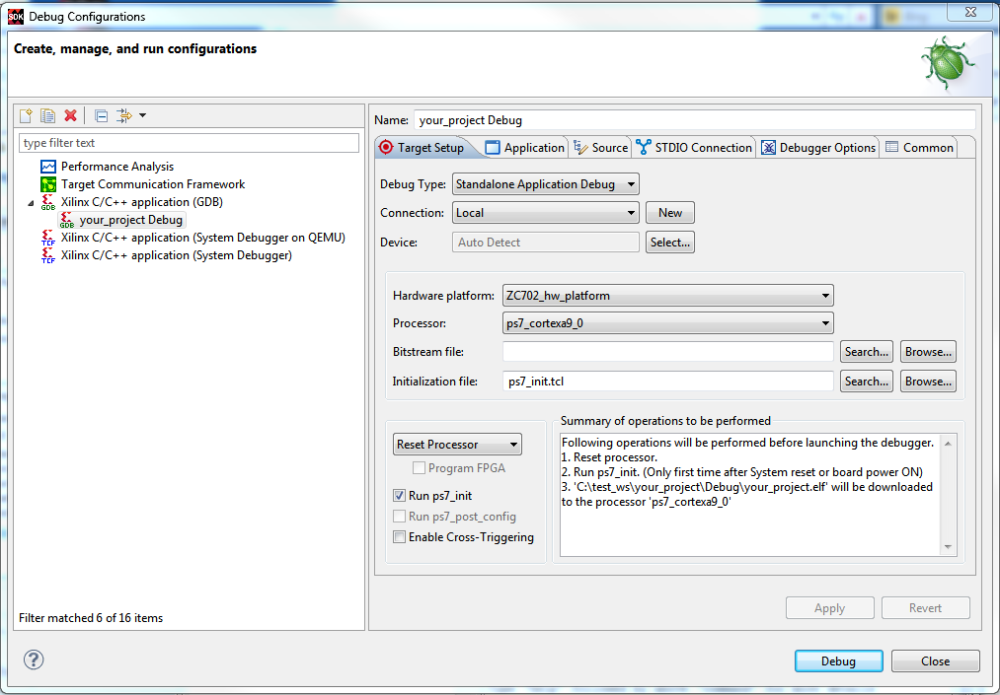

The Run or Debug Configurations dialog box allows you to create a run or debug configuration that can be used to run or debug your design in SDK.
You can also profile your design using this dialog box.
